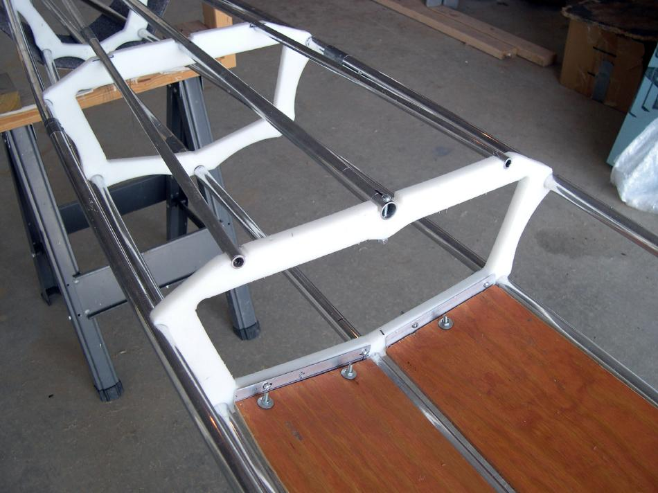

| Sea Otter / Sea Otter - R | Menu Last Page Next Page |
|

The flat aft deck is 2in ( 5cm) above the gunwales. 2ea. X 1/2" (12.7mm) deck tubes provide a smooth transition for the PVC skin and serve as layback tubes if required. This taller deck configuration allows greater storage than the flat Greenland decks. Offsets for this deck option are also available for the Sea Tour 15-R, Sea Tour 17-R, and the Sea Ranger ST.
|
|